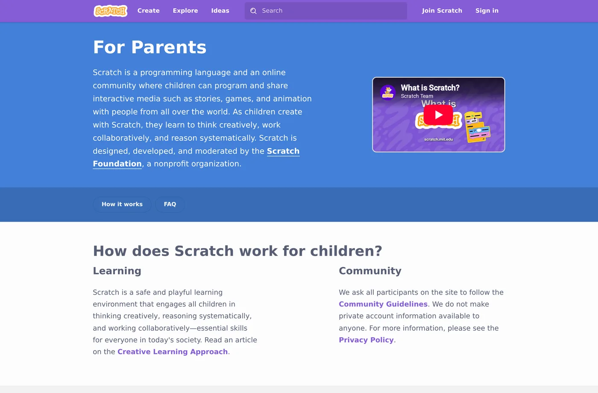
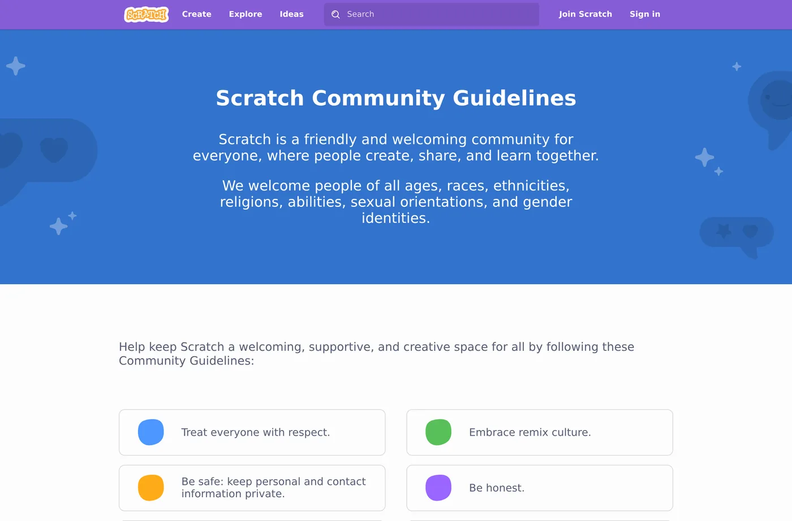

🛡️ Lesson 5.2: Sharing Safely & the Scratch Community
Scratch has a huge online community — one of its best features and the part parents worry about most. Here's exactly how it works, what protections exist, and how to set your child up to share safely and kindly.
📚 What You'll Learn
By the end of this lesson, you will be able to:
- Understand Scratch accounts, privacy, and what data is collected
- Know how sharing works — private by default until you share
- Explain the moderated community and comment controls
- Set healthy sharing habits and good digital citizenship
Estimated Time: 30 minutes • Audience: you (then a chat with your child)
In This Lesson
🎓 Accounts & privacy
Scratch is run by a non-profit and takes children's privacy seriously (it complies with children's privacy laws like COPPA in the US). When your child signs up, Scratch asks for a parent/guardian email and collects minimal information.

✅ Set up the account the safe way
- Use a username that hides real identity (no full name, school, or birth year).
- Enter your email as the parent contact — you'll get account notices.
- Choose a password together and keep it somewhere you both can find it.
- Remind them: never share real name, address, school, phone, or photos in projects or comments.
🎓 Private by default
A crucial reassurance: projects are NOT public until your child explicitly clicks “Share.” Everything they build stays private to their account until then. Nothing is broadcast to the world by accident.
(private)"] B -->|child clicks Share| C["Visible in the community"] B -->|never shares| D["Stays private forever"] style A fill:#4C97FF,color:#fff,stroke:#333 style B fill:#59C059,color:#fff,stroke:#333 style C fill:#FFAB19,color:#5c3d00,stroke:#333 style D fill:#e2e8f0,color:#1e293b,stroke:#333
💡 You can code without ever sharing
If you'd rather keep everything private for now, that's completely fine — your child can create, save, and enjoy Scratch indefinitely without sharing a single project. Sharing is a choice, not a requirement.
🎓 The moderated community
When a project is shared, others can view it, "love" it, favorite it, remix it, and comment. Scratch works hard to keep this space kind: there's active moderation, community guidelines, and easy reporting.

The guidelines boil down to a few kind, sensible rules:
- Be respectful — treat others how you'd want to be treated.
- Be constructive — give helpful feedback, not put-downs.
- Keep personal info private — yours and everyone else's.
- Be honest — credit others' work when you remix.
- Help keep the site friendly — report anything that isn't.
💬 Teach It: Digital citizenship
Scratch is many kids' first online community — a wonderful, low-stakes place to practice being a good digital citizen, with you alongside.
The conversation to have before sharing
"When we share your project, other kids around the world can see it and leave comments. Most are super nice! But our family rules are: we never share private stuff — our real name, where we live, our school — and if anyone's ever unkind, you show me and we handle it together. Deal?"
Model kind commenting
Write a comment together on a project you both like. Praise something specific: "I love how the dragon breathes fire — how did you do that?" Kind, curious, specific — the gold standard.
Handle criticism gracefully
Someone will eventually leave a "meh" comment. Frame it early: "Not everyone will love everything we make, and that's okay. We can learn from helpful notes and ignore unkind ones."
👧 Ages 5–7
Keep it private, or share only with family. They don't need the public community yet — focus on making.
🧒 Ages 8–11
Good age to start sharing with your supervision. Read comments together at first. Practice writing kind ones.
🧑 Ages 12+
More independence, with clear expectations. Talk about online reputation, crediting remixes, and not oversharing.
🌱 Growth mindset: feedback is information, not a verdict
Sharing is the first time your child's work meets strangers' opinions — and the first time many of us parents feel that sting on their behalf. Help them sort comments into two piles: helpful ("the jump is hard to time") is information they can use to make version 2 better; unkind says more about the commenter than the project. Neither one decides whether they're "good at coding."
Model it with your own work: share a small project of yours, read the comments together, and think out loud — "Hmm, that's a fair point. I haven't figured out how to fix that yet." Every real Scratcher's best project started as a version 1 someone had ideas about.
🎓 Healthy habits
- Balance making vs. browsing. Creating is the goal; endless scrolling through others' games less so. Nudge toward "let's make" over "let's watch."
- Time boundaries. Agree on session lengths up front, just like any screen time.
- Shared space. Keep Scratch on a family device or in a common area, especially early on.
- Regular check-ins. "Show me what you made!" doubles as fun bonding and light supervision.
- Know the off switch. You can review your child's account via the parent email and Scratch's account tools whenever you like.
🎯 Quick Check
Question 1: When is a child's Scratch project visible to the public?
Question 2: Which is TRUE about the Scratch community?
Question 3: Best safety habit for a young sharer?
📓 Learning Journal
Take five minutes to write it down
This one is part journal, part family plan. What you write here can become your household's sharing rules.
- Key concepts: In your own words, what does "private until shared" mean? What protections does the Scratch community have that typical social media doesn't?
- What clicked: Which fact most eased (or sharpened) a worry you had about kids online — no private messaging, turning comments off, the report button?
- Questions & confusion: What would you still like to check on the official Scratch for Parents page before your child shares?
- Ideas to try: Draft your three or four family sharing rules (what never gets shared, where Scratch is used, what to do with a mean comment). Which project would be a good first one to share together?
- Progress & feelings: How do you feel about your child being part of an online community — excited, nervous, both? How did they react to the "before sharing" conversation?
💡 Teach It tip: Write the family sharing rules together on one page of your child's coder's notebook and have them sign it. Kids keep rules they helped write far better than rules handed to them.
Summary & What's Next
🎓 Key Takeaways
- Scratch minimizes data, uses a parent email, and is built for kids' privacy.
- Projects are private until shared — sharing is always a choice.
- The community is moderated, guideline-based, and has no private messaging.
- Set a non-identifying username, keep it a shared space, and talk about kind, safe behavior.
For the definitive, up-to-date details, always check the official Scratch for Parents and Privacy Policy pages.
🏅 What You've Accomplished
- Learned how Scratch accounts, privacy, and the parent email work
- Confirmed that nothing goes public until your child clicks Share
- Know the community guidelines and every comment control
- Have a script for the "before sharing" family conversation
📋 Before the Next Lesson
- Set up (or review) your child's account with a non-identifying username and your email
- Read the Community Guidelines together
- Write your family sharing rules and your journal entry
❓ Common Questions at This Stage
Does my child need an account at all?
No. Anyone can open the editor and create without signing in, then use File → Save to your computer. An account adds saving online, sharing, and the community — worth it when you're ready, but never required.
Should my child share Star Catcher, since it started from the course?
Absolutely — it's their game, built with their choices. If it began as a remix of someone else's project, Scratch shows the credit automatically; it's still good manners to add a thank-you in the Notes and Credits box. Crediting others is part of good digital citizenship.
What if my child gets an unkind comment?
Stay calm and treat it as a team job: read it together, report it with the Report button, delete it from their project, and talk about how it made them feel. Remind them the comment doesn't measure their work — and consider turning comments off on that project for a while.
🔭 Looking Ahead
Your child is coding, creating, and sharing safely. But what about a younger sibling who can't read the blocks yet? In Lesson 5.3: ScratchJr — Coding for Ages 5–7, you'll learn the free picture-block app built for little ones, and how to coach a pre-reader through their first program.
💛 Encouragement for the Journey
Worrying about your child online means you're paying attention — that's exactly the job. You now know more about how Scratch keeps kids safe than most parents ever look up. Trust the plan you've made, keep checking in, and let them enjoy the audience they've earned.
🎓 Comments & controls
Comments are the main way kids interact. A few things that make this safer than typical social media:
⚠️ It's still the internet
Moderation is strong but not perfect, and any social space can bring criticism or the occasional unkind comment. Keep the account on a shared device or in a common room, check in regularly, and make it normal to show you a mean comment so you can report it together.